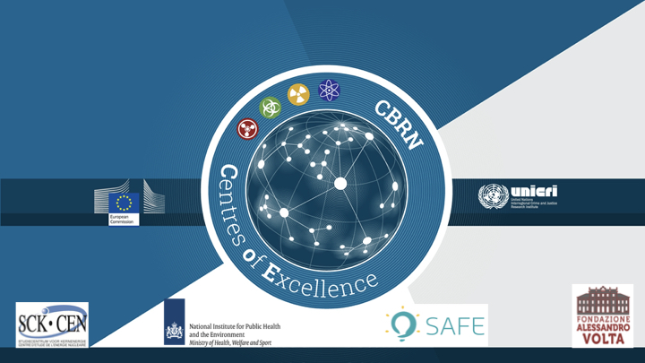

Guide for Trainers - COVID-19 Lebanon
2021-07-13
Chapter 1 Foreword
This guide for teachers is part of the EU project 73 action plan for the COVID19 emergency response activities in Lebanon. A major part of action plan has to be delivered by trainees of first responders. The guide forms a handbook for the trainers to deliver the training on COVID19 emergency response, in particular for setting-up and operating Rapid Testing Facilities.

Trainers specification:
To train the content of the COVID19 modules, trainers should be selected. Good teaching skills is key in transferring knowledge. As the content is taught to first responders, it is key to have a confident and hands-on teacher delivering the training.
Minimum qualifications:
Good training skills are key in transferring knowledge.
Professionally connected to community health service provider
Computer literate
Additional relevant experiences:
Background in C, B and/or RN
Experience in clinical diagnostic settings.
Acknowledgements
Material for the modules was contributed by the Amsterdam Municipality
Health Services (GGD-Amsterdam), the COVID19 testing center in
Kranenburg, Germany and various staff-members at the RIVM.
Copyright
Original photographs, illustrations, slides and video’s are protected by copyright. If you want to use material from our websites, please send a permission request to robert-jan.ten.hove@rivm.nl in which you indicate what image it concerns and for what purpose you want to use it. Images, illustrations, video’s, slides and text from the websites may not be used for commercial purposes.
Information from the websites may be reused provided the developer is acknowledged as source.
Note that this Training of Trainer Guide, the training movies and the eLearning modules are licensed under the Creative Commons Attribution-NonCommercial-NoDerivatives 4.0 International License.
1.1 Executive Summary
This guide for trainers contains an introduction of the curriculum, guidance on the curriculum structure and objectives and an overview of the modules and individual topics therein. The COVID19 curriculum covers the following modules:
Module I: Introduction
Module II: Types of Rapid Tests
Module III: Validation of Test Kits
Module IV: Quality Management in Testing Center
Module V: Set-up and Workflow in Testing Center
Module VI: Practical training